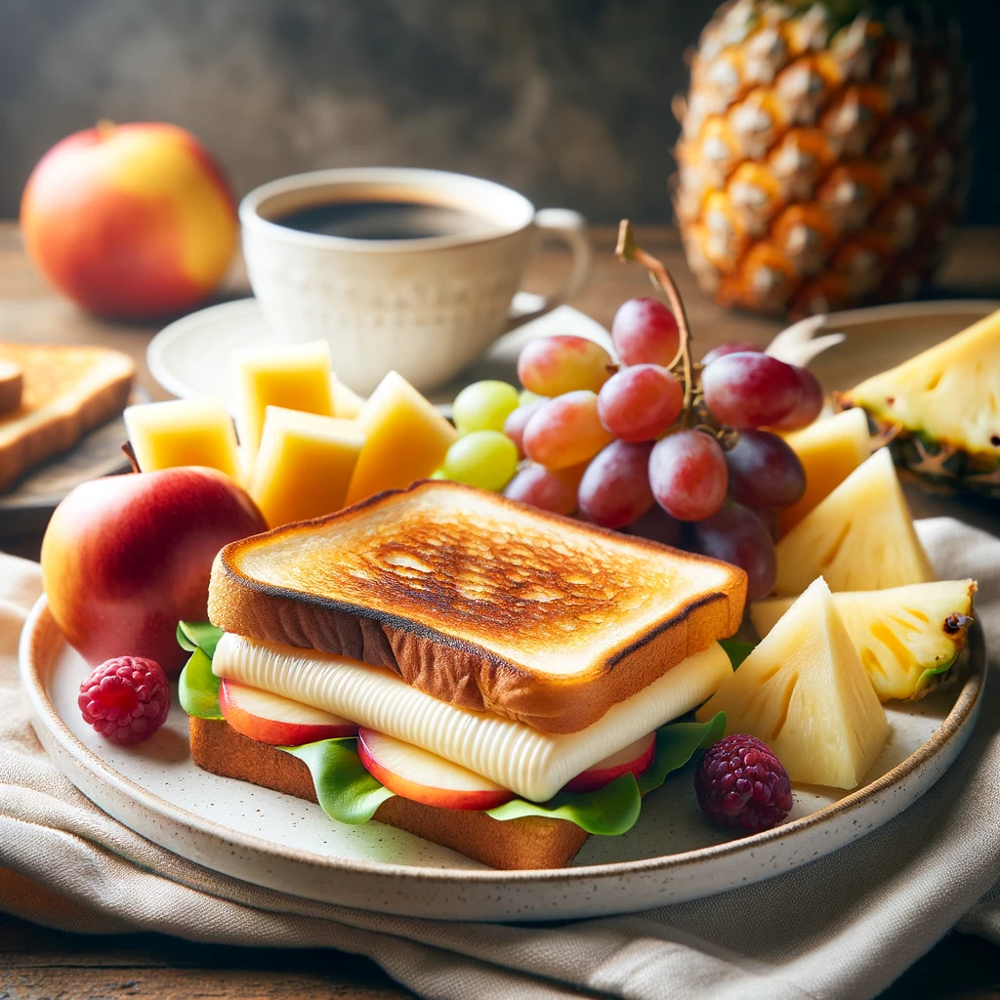

Grilled Cheese on Whole Grain Bread (Dairy-Free Cheese)
Ingredients
- 2 slices whole wheat bread (approximately 50 grams/slice)
- 1 tablespoon dairy-free butter or margarine (spreadable)
- 2-3 slices dairy-free cheese of your choice (shredded or sliced)
- Pinch of salt and black pepper (optional)
| Nutrition Facts |
Mixed Pineapple and Grapes |
Others |
| Calories |
100-110kcal |
300-400kcal |
| Protein |
1.7g |
15-20g |
| Fat |
0.4g |
15-20g |
Meal Procedure
- Heat a non-stick pan or griddle over medium heat.
- Spread the dairy-free butter evenly on one side of each bread slice.
- (Optional) Sprinkle a pinch of salt and pepper on the non-buttered side of one bread slice.
- Place the buttered slice, butter-side down, on the hot pan.
- Top with the dairy-free cheese slices.
- Place the other bread slice, buttered side up, on top of the cheese.
- Cook for 2-3 minutes per side, or until golden brown and the cheese melts.
- Gently press down on the sandwich with a spatula while cooking to ensure even browning and melting.